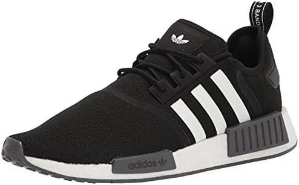

Link para voltar para a página principal da atividade aqui
Nome: TÊNIS NIKE AIR MAX SOLO MASCULINO
Preço: R$ 559,99
Nome: Sapato. Adidas ORIGINALS Nmd_r1 masculino
Preço: R$760,64 
Nome: Tênis Colcci Masculino de Napa 8050100760
Preço: R$ 249,90
Nome: SAPATO DAKOTA TRATORADO VERNIZ VERMELHO
Preço: R$ 149,90
Nome: Sapato ramarim feminino loafer 2312121
Preço: R$ 139,99